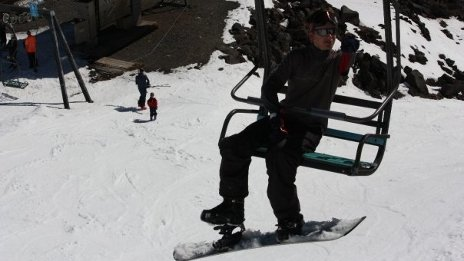
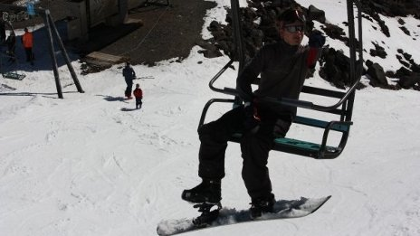

-


 

I'm a web developer and creator of many things.
Marvel at my wondrous creations-
-
Chris Corson-Scott Website
I was tasked with building a website to showcase Chris' artwork as a slideshow with image zooming.
View: chriscorsonscott.com -
Dumploader
A file hosting website written in JavaScript and utilising the Node.JS web application framework.
Source: master5o1/Dumploader -
WordPress & bbPress
I've made a few of plugins to bbPress 2.0. There's the post toolbar (image), an ignore post filter, and one that allows assigning of colours to a forum.
Plugin page: bbPress Post Toolbar -
My Website
My website is my HTML sketchpad. I redesign it to learn more about web development and related technologies.
I first built my website in 2006, heavily relying on W3Schools for help with HTML. Now I rarely need to look at documentation.
-
-
About
I'm a 23 year old geek from New Zealand.
I was born in Switzerland but I speak more C# and Java than I do German, French or Italian.
-
Hobbies
I enjoy cycling, having done two ≈50km journeys.
In winter I try to make the most of my Mt. Ruapehu Life Pass by skiing or snowboarding.
-
Education
2010 – 2012 The University of Auckland
Bachelor of Science (Computer Science)
2003 – 2007 Mt. Roskill Grammar School
2007 NCEA Level 3
2006 NCEA Level 2
2005 NCEA Level 1
Awards
2007 The de Beur Award
-
Employment
Freelance
Aug 2012 Chris Corson-Scott (Web development)
EVENT Cinemas
Jan – Feb 2012 Cinema Services Attendant
Safe Kids In Daily Supervision
Mar 2006 – Dec 2011 Programme Assitant
Electoral Commission
Nov – Dec 2011 Issuing Officer
Nov – Dec 2011 Administrative Support
Aug – Nov 2008 Issuing Officer
Aug – Nov 2008 Administrative Support
Statistics New Zealand
Feb – Mar 2011 Enumerator (Census collector)
-